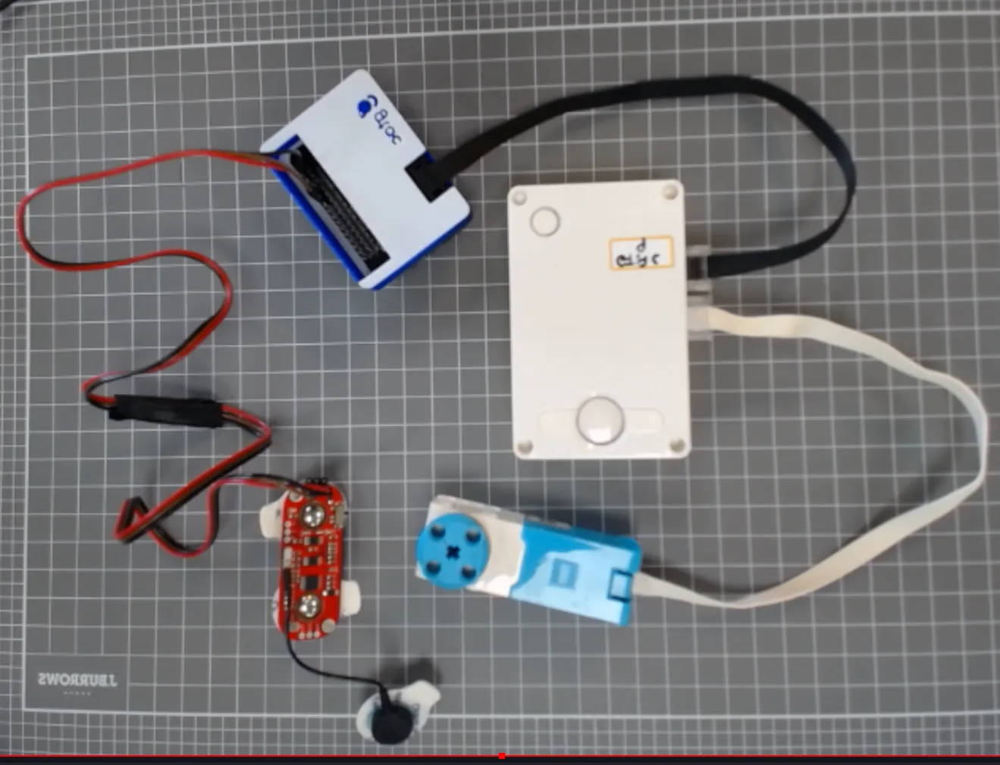
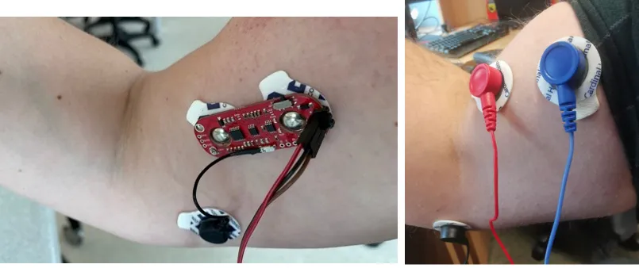
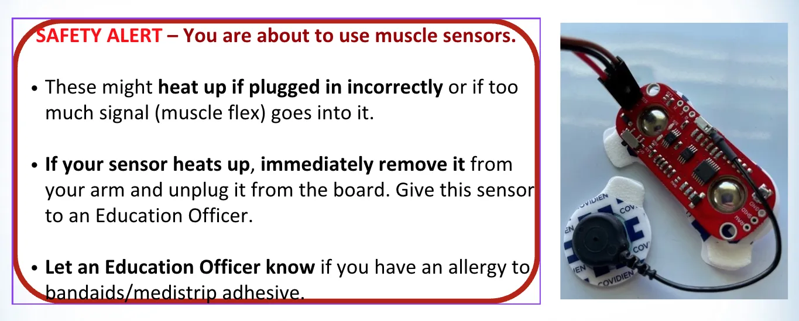

03/06
Connect your sensor cables
Look at your cables. Which colours do you have? Select your cable set below.
Connect your cables like this:

Match each cable to the correct pin: GND, 3V3 and IO32.
In this activity you’ll connect a muscle sensor to control your motors, then test it. Use the buttons below to move through each step.

In this section, you will get a muscle sensor to connect with your robotic arm. Watch this short video to learn about the components you will get with the muscle sensor.
Choose your cable colours at the top, then tap 1 GND, 2 3V3 and 3 IO32 to watch each plug go on. Drag the model to turn it, or drag down to look at the pins from above.
Look at your cables. Which colours do you have? Select your cable set below.
Match each cable to the correct pin: GND, 3V3 and IO32.


Attach the sensor to your forearm before you start the arm program. The board measures your relaxed muscle when it starts.
Relax your arm and keep it still while the program starts. Tap the numbers under the hub to go through each step.